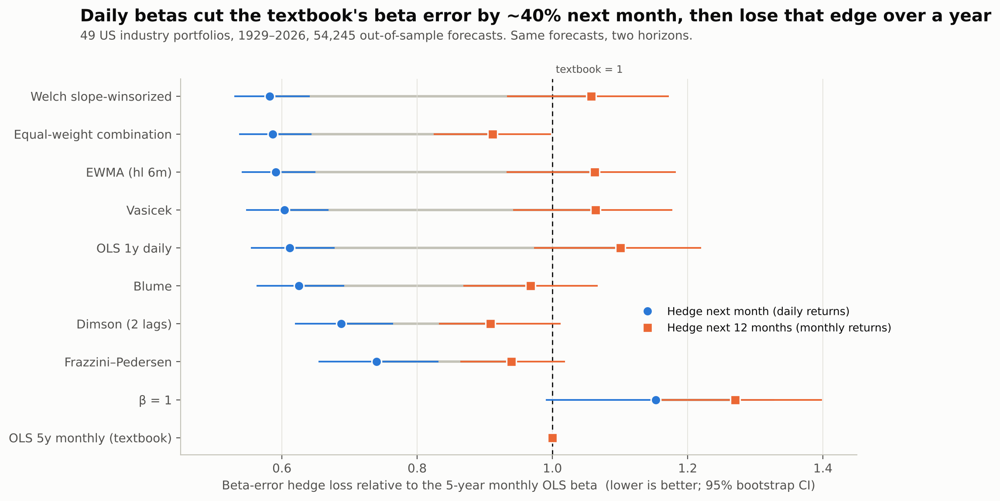
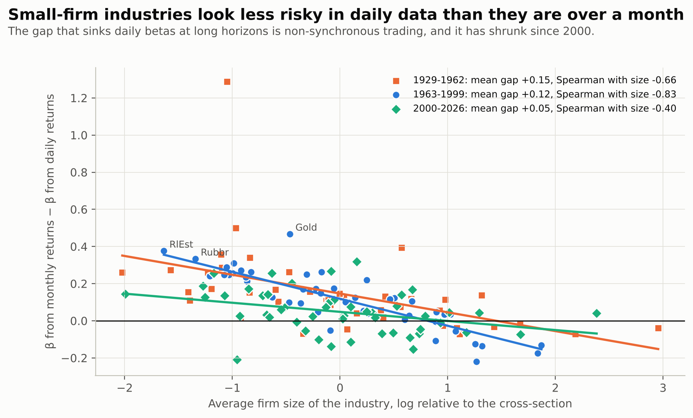
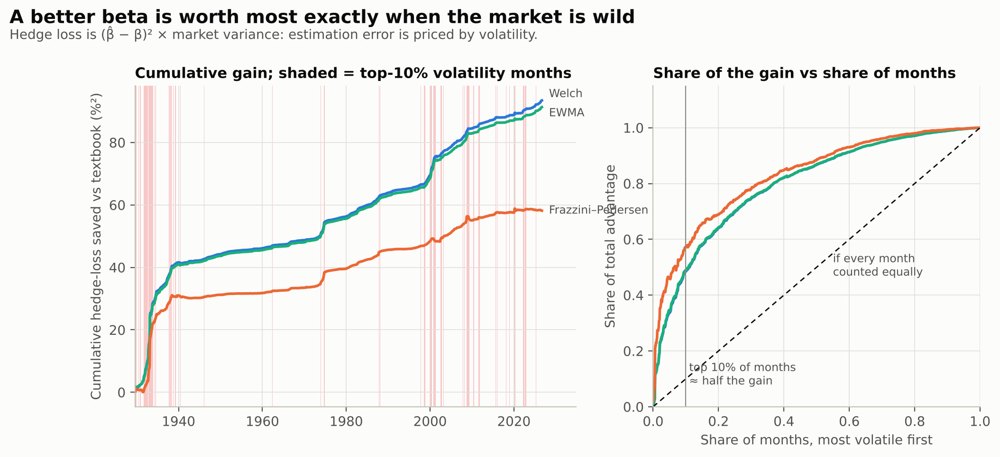
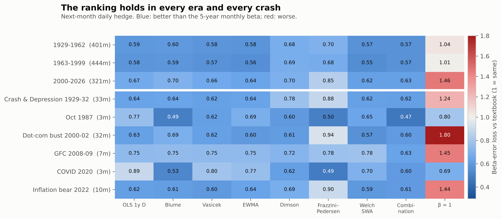
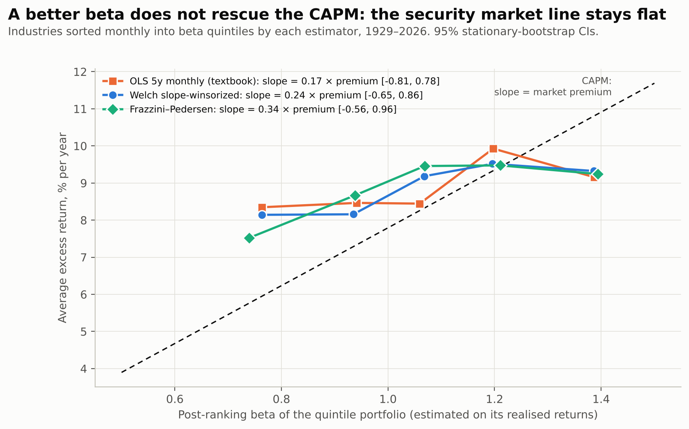

Working paper · Project 09
A 97-year out-of-sample horse race of nine market-beta estimators, and whether a better beta rescues the CAPM
Project 09 of 30 Quant Research Projects · Working paper, November 2026

The CAPM beta is the most estimated number in finance, and the textbook recipe (OLS on five years of monthly returns) is still the default in courses, data terminals and valuation reports. Two questions are usually asked separately. Which estimator forecasts beta best? And is the flat security market line (high-beta assets do not earn more) just a symptom of noisy betas? This project answers both on the same forecasts, with a loss function that a practitioner actually pays: the variance left over after hedging next period's market exposure with the estimated beta.
Nine estimators (textbook monthly OLS, one-year daily OLS, Blume, Vasicek, EWMA, Dimson, Frazzini– Pedersen, Welch's slope-winsorized age-weighted beta, and an equal-weight combination) plus a β = 1 baseline forecast the beta of each of the 49 Fama–French industry portfolios at every month-end from July 1929 to August 2026, using only data available that day. That is 54,245 out-of-sample forecasts per estimator over 1,166 months, scored on the next month of daily returns and on the next twelve monthly returns. Inference uses Newey–West Diebold–Mariano tests with Holm correction, a 90% Model Confidence Set and stationary-bootstrap confidence intervals.
Main findings
Practical rule. Estimate beta at the frequency you will hedge at. For a one-month hedge, use age-weighted daily data with some shrinkage (EWMA, Vasicek or Welch). For a long-horizon hedge or a cost of capital, either stay with monthly data or correct daily betas for non-synchronous trading (Dimson lags), and shrink toward the cross-sectional mean. Do not expect any of them to make high-beta assets earn more.
The beta estimation literature is mostly a forecasting contest (Blume 1975; Vasicek 1973; Levi & Welch 2017; Welch 2022), and the asset-pricing literature mostly takes betas as given and finds the security market line too flat (Black, Jensen & Scholes 1972; Fama & French 1992; Frazzini & Pedersen 2014). The two meet in an old argument: if betas are measured with error, sorting on noisy betas understates the true slope, so maybe the CAPM's failure is an estimation failure. This project puts both questions on one set of forecasts, adds a third (does the winner depend on the hedge horizon?), and uses a loss that has a direct economic meaning.
Why a hedging loss. If an investor holds an asset with excess return y and shorts β̂ units of the market x, the variance of the hedged position over the next period is
L(β̂) = mean[(y − β̂x)²] = L(β*) + (β̂ − β*)² · mean[x²],
where β* is the beta that would have been best in hindsight for that period. The second term is the only part an estimator controls. It is a squared beta error weighted by realised market variance: the same error costs ten times more in a month when the market is ten times more variable. That one identity drives finding 4 and explains why rankings are decided in crises.
Pre-registered design. Before any result was computed I fixed the universe, the estimator
parameters (literature defaults, listed in src/estimators.py), the loss function, the
evaluation sample, the subperiods and stress windows, and the following hypotheses.
| Hypothesis | Verdict | |
|---|---|---|
| H1 | Daily-data estimators with shrinkage or age-weighting beat the 5-year monthly OLS beta in next-month hedge loss. | Supported (all eight alternatives, Holm p < 0.001) |
| H2 | More than half of the advantage comes from the most volatile 10% of months. | Borderline: 49–57% depending on the estimator |
| H3 | No estimator produces a security market line with a slope equal to the market premium. | Supported (all CIs below 1) |
| H4 | At a 12-month monthly-return horizon, uncorrected daily betas lose to monthly betas, and a lag correction (Dimson) recovers the gap. | Directionally supported, not significant after Holm |
Assets. The 49 value-weighted industry portfolios of Kenneth French's Data Library, daily returns from July 1926 to September 2026 (CRSP vintage 202609). Industry portfolios are deliberately chosen over individual stocks: they exist for a century with no survivorship bias, their betas move with real economic exposure, and they include industries made of small, thinly traded firms (Coal, Ships, Rubber, Real Estate) next to mega-cap ones, which is what makes the horizon question testable. Some industries start later (Soda, Health, Fun and others in 1963); the panel is unbalanced and every comparison uses the common sample where all estimators are defined.
Market. A daily value-weighted market built from the 49 industries, with weights equal to number of firms × average firm size at the previous month-end (both reported by French). It is used instead of French's daily factor file only for engineering reasons. Its fidelity was checked against the official series:
| Check | Value |
|---|---|
| Monthly: correlation with official Mkt (1926–2026, 1,202 months) | 0.9995 |
| Monthly: tracking error | 0.58% a year |
| Daily: correlation with official Mkt-RF (400 random days) | 0.9996 |
| Daily: slope on official / mean absolute difference | 0.9995 / 1.5 bp |
Risk-free rate. French's monthly one-month T-bill, converted to the daily rate that compounds to the monthly rate over that month's trading days (French's own convention). All returns are excess returns.
Provenance. The three zip files used have SHA-256 hashes identical to the files served by the
Data Library on 21 November 2026 (hashes in src/fetch_data.py). The parsed panel is committed as
data/panel_daily.csv.gz.
All parameters were set before evaluation from the original papers or common practice.
| Name | Data | Recipe |
|---|---|---|
| OLS-5Y-M (textbook) | 60 monthly returns (min 36) | OLS slope with intercept |
| OLS-1Y-D | 252 daily returns (min 200) | OLS slope with intercept |
| Blume | as OLS-1Y-D | 0.33 + 0.67 β̂ (Blume 1975) |
| Vasicek | as OLS-1Y-D | Empirical-Bayes shrinkage toward the cross-sectional mean, weight = prior variance / (prior variance + sampling variance) |
| EWMA | all past daily returns | Exponentially weighted covariance / variance, half-life 126 days |
| Dimson | 252 daily returns | Sum of slopes on the market return and its first two lags (Dimson 1979) |
| Frazzini–Pedersen | 5y of overlapping 3-day log returns for correlation, 1y of daily for volatilities | ρ · σᵢ/σₘ, then 0.6 β̂ + 0.4 (Frazzini & Pedersen 2014) |
| Welch-SWA | last 756 daily returns | Returns winsorized to [−2x, 4x] around the market's own move, exponential age weights with decay 2/252 per day (Welch 2022) |
| Combination | Equal-weight average of the eight estimators above | |
| β = 1 | The "no information" baseline |
At the last trading day of each month t, each estimator computes each industry's beta from data up to and including that day. The forecast is scored on
Months with fewer than 15 valid daily returns for an industry are skipped. The first evaluation month
is August 1929 (when Frazzini–Pedersen's five-year correlation window first fills), the last is
September 2026 (October 2025 for the 12-month horizon). Unit tests (tests/) check every estimator
against reference implementations and verify that perturbing any future return leaves every past
forecast unchanged.
| Estimator | Hedge loss (%²/day) | Variance removed | Excess-loss ratio [95% CI] | DM t | Holm p | MZ slope | In 90% MCS |
|---|---|---|---|---|---|---|---|
| Welch-SWA | 1.301 | 47.8% | 0.58 [0.53, 0.64] | −6.07 | <0.001 | 0.93 | ✓ |
| Combination | 1.302 | 47.8% | 0.59 [0.54, 0.64] | −5.93 | <0.001 | 1.04 | ✓ |
| EWMA | 1.303 | 47.7% | 0.59 [0.54, 0.65] | −6.03 | <0.001 | 0.91 | ✓ |
| Vasicek | 1.305 | 47.6% | 0.60 [0.55, 0.67] | −5.71 | <0.001 | 0.91 | |
| OLS-1Y-D | 1.307 | 47.6% | 0.61 [0.55, 0.68] | −5.64 | <0.001 | 0.86 | |
| Blume | 1.309 | 47.5% | 0.63 [0.56, 0.69] | −5.44 | <0.001 | 1.29 | |
| Dimson | 1.321 | 47.0% | 0.69 [0.62, 0.76] | −4.60 | <0.001 | 0.81 | |
| Frazzini–Pedersen | 1.331 | 46.6% | 0.74 [0.65, 0.83] | −3.95 | <0.001 | 1.32 | |
| OLS-5Y-M (textbook) | 1.381 | 44.6% | 1 | 0.63 | |||
| β = 1 | 1.410 | 43.4% | 1.15 [0.99, 1.33] | +2.38 | 0.017 |
Hindsight-optimal β* leaves 1.189 %²/day. Common sample: 54,245 industry-months, 1,166 months.
Three things stand out. First, the textbook beta is badly over-dispersed (MZ slope 0.63): its high betas are too high and its low betas too low, which is exactly the error Blume and Vasicek were designed to fix. Second, the move from monthly to daily data does most of the work: plain one-year daily OLS already reaches 0.61, and shrinkage or age-weighting adds a few points. Third, Blume and Frazzini– Pedersen over-shrink at this horizon (MZ slopes 1.29 and 1.32), so their fixed weights toward 1 cost accuracy for diversified industry portfolios.
In absolute terms, hedging removes about 45–48% of an industry's daily variance, and the best estimator lowers the remaining variance by 5.8% relative to the textbook. The 40% figure refers to the part of the loss an estimator can influence.
| Estimator | Excess-loss ratio [95% CI] | DM t | Holm p | Bias of β̂ vs realised monthly β | In 90% MCS |
|---|---|---|---|---|---|
| Dimson | 0.91 [0.83, 1.01] | −1.76 | 0.63 | −0.06 | ✓ |
| Combination | 0.91 [0.82, 1.00] | −1.76 | 0.63 | −0.09 | ✓ |
| Frazzini–Pedersen | 0.94 [0.86, 1.02] | −1.34 | 0.97 | −0.06 | ✓ |
| Blume | 0.97 [0.87, 1.07] | −0.56 | 1.00 | −0.10 | ✓ |
| OLS-5Y-M (textbook) | 1 | −0.01 | ✓ | ||
| Welch-SWA | 1.06 [0.93, 1.17] | +0.85 | 1.00 | −0.12 | |
| EWMA | 1.06 [0.93, 1.18] | +0.88 | 1.00 | −0.11 | |
| Vasicek | 1.06 [0.94, 1.18] | +0.94 | 1.00 | −0.11 | |
| OLS-1Y-D | 1.10 [0.97, 1.22] | +1.40 | 0.97 | −0.11 | |
| β = 1 | 1.27 [1.15, 1.40] | +3.79 | 0.001 | −0.07 |
The winners of 6.1 are now the losers. The bias column shows why: every estimator built on contemporaneous daily returns under-predicts the beta that shows up in monthly returns by about 0.11. The estimators that keep (or slightly improve) their rank are those that either use monthly data, add lagged market returns (Dimson), use multi-day returns for correlation (Frazzini–Pedersen) or shrink toward 1 (Blume). Nothing is significant after Holm: twelve-month windows overlap, so a century gives fewer than 100 independent observations.

For each industry and era I estimate beta on the same days twice, from daily and from monthly returns.
| Era | Mean daily β | Mean monthly β | Mean gap | Gap > 0 | Spearman(gap, size) | Spearman(gap, lag β) |
|---|---|---|---|---|---|---|
| 1929–1962 | 0.96 | 1.11 | +0.15 | 79% | −0.66 | +0.89 |
| 1963–1999 | 0.97 | 1.09 | +0.12 | 82% | −0.83 | +0.90 |
| 2000–2026 | 0.95 | 1.00 | +0.05 | 69% | −0.40 | +0.47 |
The gap is largest for industries of small firms and is almost perfectly ranked by how much the industry reacts to yesterday's market (all p < 0.005). That is the signature of stale prices (Scholes & Williams 1977; Dimson 1979): small firms' prices catch up with market moves over several days, so a daily regression misses part of their exposure, while a monthly regression captures it. The gap has fallen by two thirds since 2000, consistent with decimalisation and electronic trading, and the subperiod table confirms that daily estimators beat the textbook at the 12-month horizon in 2000–2026 (ratios 0.86–0.90) but not before.
| 12-month horizon | OLS-1Y-D | Vasicek | EWMA | Welch | Dimson | FP | Combination |
|---|---|---|---|---|---|---|---|
| 1929–1962 | 1.16 | 1.12 | 1.12 | 1.12 | 0.88 | 0.88 | 0.92 |
| 1963–1999 | 1.16 | 1.11 | 1.10 | 1.10 | 0.96 | 0.96 | 0.95 |
| 2000–2026 | 0.91 | 0.91 | 0.90 | 0.89 | 0.92 | 1.03 | 0.86 |

| Estimator | Advantage from top 5% vol months | Top 10% | Bottom 50% | Months won |
|---|---|---|---|---|
| Welch-SWA | 34% | 49% | 13% | 89% |
| EWMA | 34% | 49% | 13% | 90% |
| Combination | 38% | 52% | 12% | 92% |
| Vasicek | 35% | 49% | 13% | 88% |
| Frazzini–Pedersen | 46% | 57% | 12% | 75% |
The better estimators win most months, but by tiny amounts; the bulk of the accumulated gain arrives in a handful of violent episodes (1929–33, 1937–38, 1974, 2000–02, 2008–09). A beta estimator evaluated only on a calm sample would look almost indistinguishable from the textbook.

At the one-month horizon, every alternative beats the textbook in every subperiod and in each of the six stress windows: the 1929–32 crash and depression, October 1987, the dot-com bust, the 2008–09 financial crisis, the COVID crash and the 2022 inflation bear market. β = 1 is the only estimator that is worse than the textbook in most windows.
| Variant | Next month | Next 12 months |
|---|---|---|
| OLS daily 126 / 252 / 504 / 1260 days | 0.64 / 0.61 / 0.65 / 0.72 | 1.16 / 1.10 / 1.10 / 1.11 |
| OLS monthly 60 / 36 / 120 months | 1 / 1.03 / 1.15 | 1 / 1.04 / 1.10 |
| EWMA half-life 63 / 126 / 252 days | 0.59 / 0.59 / 0.62 | 1.10 / 1.06 / 1.05 |
| Dimson 1 / 2 / 5 lags | 0.68 / 0.69 / 0.84 | 0.91 / 0.91 / 0.93 |
| Welch: full / age-weighting only / winsorizing only / neither | 0.58 / 0.59 / 0.67 / 0.67 | 1.06 / 1.08 / 1.10 / 1.11 |
| Welch bounds (−1, 3) / (−2, 4) / (−3, 5) | 0.58 / 0.58 / 0.58 | 1.04 / 1.06 / 1.06 |
| Blume / Vasicek applied to the 5-year monthly beta | 0.88 / 0.88 | 0.91 / 0.94 |
| Dimson-adjusted daily beta + Vasicek shrinkage (not pre-registered) | 0.67 | 0.88 |
Bold = main specification. Two lessons. On industry portfolios, Welch's gain comes from age-weighting, not winsorizing: winsorizing alone is no better than plain OLS on the same window, which makes sense because diversified portfolios have few idiosyncratic outliers to clip (on single stocks the winsorizing would likely matter more). And the conclusions are not knife-edge: no reasonable parameter choice makes the monthly textbook competitive at one month, and no variant of an uncorrected daily beta beats the textbook at twelve months over the full sample. The last row, a post-hoc combination of the two fixes that work at long horizons, gives the best 12-month ratio (0.88); it is reported as a lead for future work, not as a result.

Each month, the 49 industries are sorted into quintiles by each estimator's beta; portfolios are held one month. Post-ranking betas come from regressing each quintile's realised returns on the market. Under the CAPM, the line through the quintiles should rise at the market premium (7.8% a year).
| Sorting beta | Post-ranking β spread (Q5−Q1) | SML slope / market premium [95% CI] | Beta-neutral low-minus-high alpha | Fama–MacBeth γ₁ − market, Holm p |
|---|---|---|---|---|
| OLS-5Y-M (textbook) | 0.62 | 0.17 [−0.81, 0.78] | 4.1% (t 3.0) | 0.023 |
| OLS-1Y-D | 0.61 | 0.20 [−0.78, 0.84] | 3.8% (t 2.5) | 0.010 |
| Blume | 0.61 | 0.20 [−0.78, 0.84] | 3.8% (t 2.5) | 0.090 |
| Vasicek | 0.64 | 0.28 [−0.64, 0.89] | 3.6% (t 2.5) | 0.014 |
| EWMA | 0.62 | 0.29 [−0.61, 0.93] | 3.4% (t 2.3) | 0.008 |
| Dimson | 0.69 | 0.31 [−0.61, 0.90] | 3.7% (t 2.5) | 0.014 |
| Frazzini–Pedersen | 0.66 | 0.34 [−0.56, 0.96] | 3.4% (t 2.4) | 0.159 |
| Welch-SWA | 0.62 | 0.24 [−0.65, 0.86] | 3.7% (t 2.5) | 0.014 |
| Combination | 0.66 | 0.22 [−0.72, 0.84] | 4.0% (t 2.7) | 0.031 |
The answer is no. Whatever beta is used to sort, high-beta industries earn about one fifth to one third of what the CAPM says they should, and the upper end of every confidence interval is below the full premium. Better beta forecasting does do one thing: it widens the realised beta spread between the quintiles (0.62 for the textbook, up to 0.69 for Dimson), which is what better sorting should do. But the return spread does not grow with it. The estimators that steepen the line slightly (Dimson, Frazzini–Pedersen) are the ones that forecast better at long horizons, not at short ones, which fits: the return premium is earned over months, so the relevant beta is the long-horizon one. The low-minus-high-beta industry portfolio, levered to be market-neutral, earns 3.4–4.1% a year; the raw t-statistics are 2.3–3.0, but after Holm across the nine sorts only the textbook sort stays below 5% (adjusted p = 0.024), so this is a "betting-against-beta in industries" effect of modest strength.
pip install -r requirements.txt
./run_all.sh # ~1 minute: backtest, statistics, robustness, figures, tests
python src/fetch_data.py # optional: re-download the raw Ken French files and rebuild the panel
Every number above is in results/*.csv; every figure is produced by src/figures.py.
09-beta-horse-race/
├── README.md this paper
├── data/panel_daily.csv.gz 49 industry + market excess returns, daily, 1926-2026 (French, CRSP 202609)
│ industry_avg_firm_size_monthly.csv French's average firm size per industry (for section 6.3)
├── src/
│ ├── fetch_data.py download the raw files, check hashes, rebuild the panel
│ ├── data.py parsing, market proxy, daily risk-free rate, validation
│ ├── estimators.py the nine estimators (all parameters at the top)
│ ├── backtest.py walk-forward forecasts and next-period sums of squares
│ ├── evaluate.py loss tables, DM/Holm, MCS, bootstrap, stress, SML tests
│ ├── horizon_gap.py daily vs monthly beta by industry and era
│ ├── robustness.py sensitivity and ablations
│ └── figures.py
├── tests/test_estimators.py correctness, no look-ahead, loss identity
├── results/ figures/
├── study/ESTUDIO_09.pdf Spanish study guide (not part of the paper)
└── run_all.sh requirements.txt LINKEDIN_POST.md
Black, F., Jensen, M. C. & Scholes, M. (1972). The capital asset pricing model: some empirical tests. Blume, M. E. (1975). Betas and their regression tendencies. Journal of Finance 30(3). Diebold, F. X. & Mariano, R. S. (1995). Comparing predictive accuracy. JBES 13(3). Dimson, E. (1979). Risk measurement when shares are subject to infrequent trading. JFE 7(2). Fama, E. F. & French, K. R. (1992). The cross-section of expected stock returns. Journal of Finance 47(2). Fama, E. F. & MacBeth, J. D. (1973). Risk, return, and equilibrium: empirical tests. JPE 81(3). Frazzini, A. & Pedersen, L. H. (2014). Betting against beta. JFE 111(1). Hansen, P. R., Lunde, A. & Nason, J. M. (2011). The model confidence set. Econometrica 79(2). Holm, S. (1979). A simple sequentially rejective multiple test procedure. Scand. J. Statistics 6(2). Levi, Y. & Welch, I. (2017). Best practice for cost-of-capital estimates. JFQA 52(2). Newey, W. K. & West, K. D. (1987). A simple, positive semi-definite, heteroskedasticity and autocorrelation consistent covariance matrix. Econometrica 55(3). Politis, D. N. & Romano, J. P. (1994). The stationary bootstrap. JASA 89(428). Scholes, M. & Williams, J. (1977). Estimating betas from nonsynchronous data. JFE 5(3). Vasicek, O. A. (1973). A note on using cross-sectional information in Bayesian estimation of security betas. Journal of Finance 28(5). Welch, I. (2022). Simply better market betas. Critical Finance Review 11(1).
Data: Kenneth R. French Data Library, Tuck School of Business, Dartmouth College.